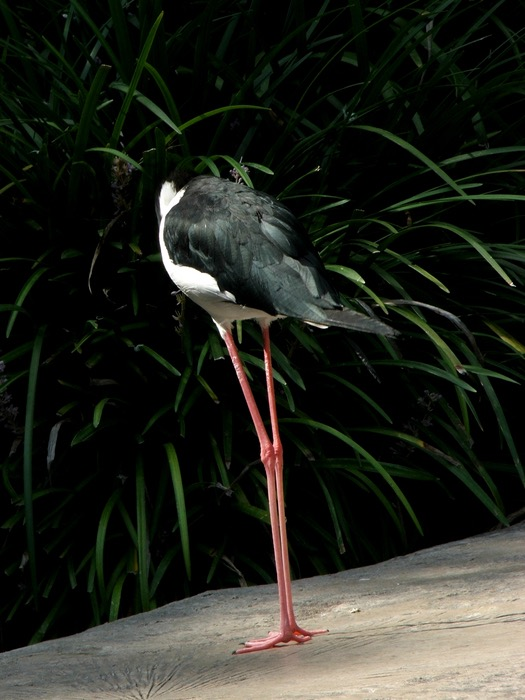

Next Photo
-
Vote
Mournful Bird
This bird looks away in what appears to be a mournful head-hanging. The long legs of the bird are bright against the green backdrop and the blades of grass seem to pop out at you. The sadness of the bird is accented by the darkness of the bushes.
More...
Title: Mournful Bird
Description: This bird looks away in what appears to be a mournful head-hanging. The long legs of the bird are bright against the green backdrop and the blades of grass seem to pop out at you. The sadness of the bird is accented by the darkness of the bushes.
Keywords: black mournful bird sad
Hidden: n
Date added: Fri Aug 18 17:30:52 CDT 2006
Date taken: Thu Aug 10 15:27:57 CDT 2006
Camera: FUJIFILM.FinePix S5100 .
Resolution: 1500x2000
Mode: 1
Shutter speed: 600/100
Flash: 16
Exposure time: 10/600
Iso: 64
Metering: 3
Aperture: 600/100
Focal length: 3450/100
Artist: NathanielGuy Mahieu
Copyright: 2006 NathanielGuy Mahieu
Views: 6542